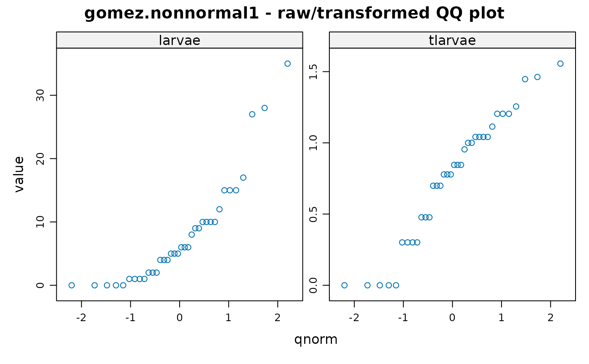

Insecticide treatment effectiveness
gomez.nonnormal1.RdInsecticide treatment effectiveness
Usage
data("gomez.nonnormal1")Format
A data frame with 36 observations on the following 3 variables.
trtinsecticidal treatment
repreplicate
larvaenumber of larvae
Details
Nine treatments (including the control, T9) were used on four replicates. The number of living insect larvae were recorded.
The data show signs of non-normality, and a log transform was used by Gomez.
Used with permission of Kwanchai Gomez.
Source
Gomez, K.A. and Gomez, A.A.. 1984, Statistical Procedures for Agricultural Research. Wiley-Interscience. Page 300.
Examples
library(agridat)
data(gomez.nonnormal1)
dat <- gomez.nonnormal1
# Gomez figure 7.3
## libs(dplyr)
## dat2 <- dat %>% group_by(trt)
## dat2 <- summarize(dat2, mn=mean(larvae), rng=diff(range(larvae)))
## plot(rng ~ mn, data=dat2,
## xlab="mean number of larvae", ylab="range of number of larvae",
## main="gomez.nonnormal1")
# Because some of the original values are less than 10,
# the transform used is log10(x+1) instead of log10(x).
dat <- transform(dat, tlarvae=log10(larvae+1))
# QQ plots for raw/transformed data
libs(reshape2, lattice)
qqmath( ~ value|variable, data=melt(dat),
main="gomez.nonnormal1 - raw/transformed QQ plot",
scales=list(relation="free"))
#> Using trt, rep as id variables

# Gomez table 7.16
m1 <- lm(tlarvae ~ rep + trt, data=dat)
anova(m1)
#> Analysis of Variance Table
#>
#> Response: tlarvae
#> Df Sum Sq Mean Sq F value Pr(>F)
#> rep 3 0.9567 0.31889 3.6511 0.0267223 *
#> trt 8 3.9823 0.49779 5.6995 0.0004092 ***
#> Residuals 24 2.0961 0.08734
#> ---
#> Signif. codes: 0 ‘***’ 0.001 ‘**’ 0.01 ‘*’ 0.05 ‘.’ 0.1 ‘ ’ 1
## Response: tlarvae
## Df Sum Sq Mean Sq F value Pr(>F)
## rep 3 0.9567 0.31889 3.6511 0.0267223 *
## trt 8 3.9823 0.49779 5.6995 0.0004092 ***
## Residuals 24 2.0961 0.08734